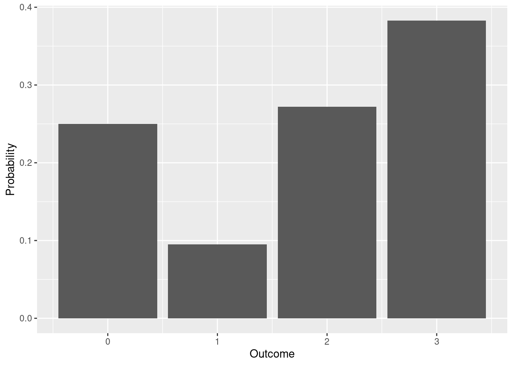
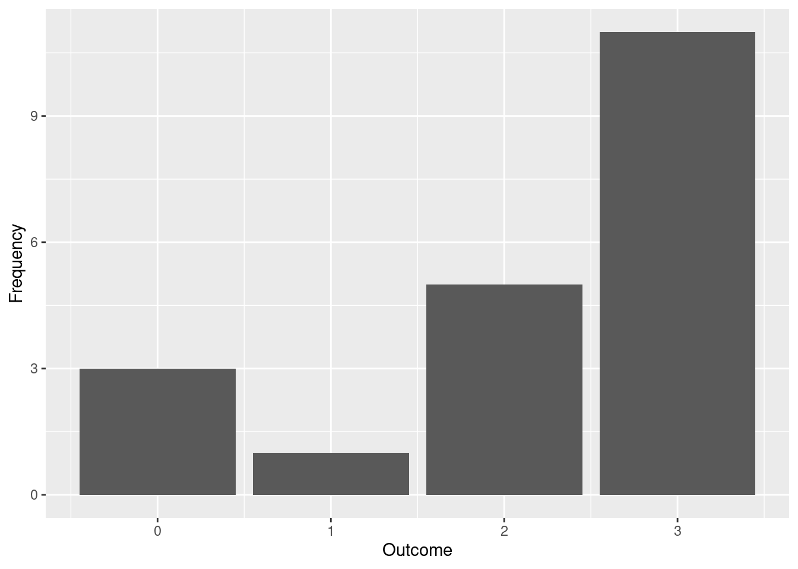
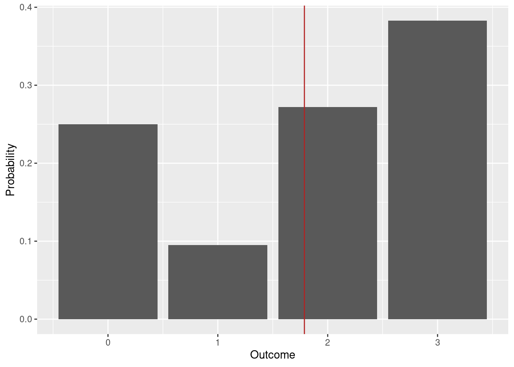
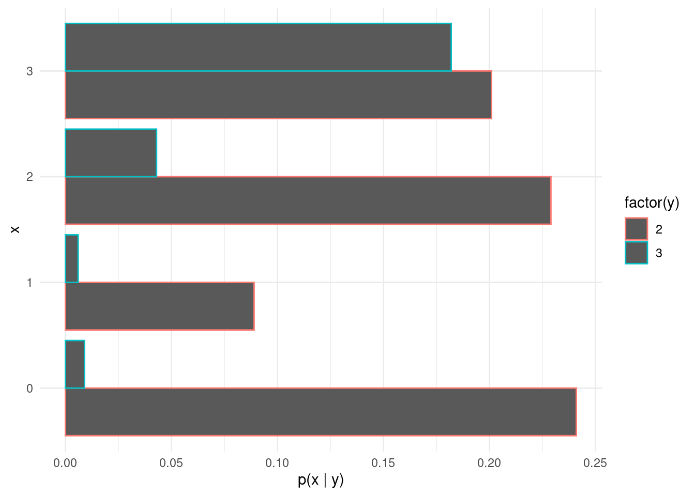

library(tidyverse)4 Discrete Distributions (Review)
Let X and Y be two discrete random variables with possible values 0, 1, \ldots, K. The probability mass functions p_X(x) and p_Y(y) assign occurrence probabilities to each possible outcome.
For example:
p_X(x) = \begin{cases} 0.250 & \text{for } x = 0\\ 0.095 & \text{for } x = 1 \\ 0.272 & \text{for } x = 2 \\ 0.383 & \text{for } x = 3 \\ 0 & \text{otherwise} \end{cases}
p_Y(y) = \begin{cases} 0.76 & \text{for } y = 2\\ 0.24 & \text{for } y = 3 \\ 0 & \text{otherwise} \end{cases}
For convenience, the probability mass functions of X and Y are stored in the tibbles px and py.
px %>%
knitr::kable()| x | p |
|---|---|
| 0 | 0.250 |
| 1 | 0.095 |
| 2 | 0.272 |
| 3 | 0.383 |
py %>%
knitr::kable()| y | p |
|---|---|
| 2 | 0.76 |
| 3 | 0.24 |
The usual visualization of a probability mass function is a bar plot.
px %>%
ggplot(aes(x = x, y = p)) +
geom_col() +
labs(
x = "Outcome",
y = "Probability"
)
The probability functions sum to one over all possible values by definition:
\sum_{x = 0}^{3}p_X(x) = 0.250 + 0.095 + 0.272 + 0.383 = 1
Exercise 4.1 (Probability Mass Function) Use the sum function to show that the probability mass function of Y sums to one.
Example 4.1 (Sampling from a univariate distribution)
set.seed(12)
smpl_x <- px %>%
slice_sample(n = 20, weight_by = p, replace = TRUE)
head(smpl_x) %>%
knitr::kable(digits=3)| x | p |
|---|---|
| 3 | 0.383 |
| 0 | 0.250 |
| 1 | 0.095 |
| 3 | 0.383 |
| 3 | 0.383 |
| 3 | 0.383 |
It is useful to visualize the observed frequency of each outcome.
# Absolute frequencies (counts)
table(smpl_x$x)
0 1 2 3
3 1 5 11 # Relative frequencies (shares)
table(smpl_x$x) / nrow(smpl_x)
0 1 2 3
0.15 0.05 0.25 0.55 smpl_x %>%
ggplot(aes(x = x)) +
geom_bar() +
labs(
x = "Outcome",
y = "Frequency"
)
Exercise 4.2 (Sampling from the Distribution of Y) Select 2000 samples from the distribution of Y and visualize the frequencies.
# Take the samples here# Visualize the frequencies here4.1 Expectation
The expected value of a random variable is the average of all possible values that can occurr, weighted by their occurrence probabilities. It is a measure of the location of the distribution.
\begin{align} \mu_x & = E(X) = \sum_{x = 0}^{3} x p_X(x) = 0 \times 0.250 + 1 \times 0.095 + 2 \times 0.272 + 3 \times 0.383 = 1.788 \\ \end{align}
mu_x <- sum(px$x * px$p)
mu_x[1] 1.788mean(smpl_x$x)[1] 2.2px %>%
ggplot(aes(x = x, y = p)) +
geom_col() +
labs(
x = "Outcome",
y = "Probability"
) +
geom_vline(xintercept = mu_x, color = "firebrick")
Exercise 4.3 (Expected Value) Compute the expected value of Y.
Solution.
# Type your code hereIf you want to predict future values of a random variable, the expected value is your best guess in the sense that it minimizes the expected value of the quadratic loss function:
E[(X - \hat{x})^2]
Let us construct an example. You need to predict the result of X and you think that the best prediction is \bar{x} = 1. When the game runs it will produce four possible values: 0, 1, 2, and 3. The error that you will make is:
L(x) = (x - 1)^2 = \begin{cases} (0 - 1)^2 = 1 & \text{x = 0}\\ (1 - 1)^2 = 0 & \text{x = 1}\\ (2 - 1)^2 = 1 & \text{x = 2}\\ (3 - 1)^2 = 4 & \text{x = 3} \end{cases}
Exercise 4.4 (Expected Quadratic Loss) Compute the expected quadratic loss for a prediction \bar{x} = 1.5.
Solution.
## Type your code here
# px %>%
# summarise(
# loss = ?
# )4.2 Variance
The variance of a random variable (distribution) measures how different the possible values that can occur are. Values that occur more often (have higher probability) under p_X receive a higher weight. Values that occur less frequently under p_X are given a lower weight in the sum.
\begin{align} Var(X) & = \sum_{x = 0}^{3} (x - \mu_x)^2 \times p_X(x) \\ & = (0 - 1.788)^2 \times 0.250 + (1 - 1.788)^2 \times 0.095 + (2 - 1.788)^2\times 0.272 + (3 - 1.788)^2 \times 0.383 \\ & = (-1.788)^2 \times 0.250 + (-0.788)^2 \times 0.095 + (0.212)^2\times 0.272 + (1.212)^2 \times 0.383 \\ & = 3.196 \times 0.250 + 0.620^2 \times 0.095 + 0.044 \times 0.272 + 1.468 \times 0.383 \\ & \approx 1.433 \end{align} \tag{4.1}
(px$x - mu_x)[1] -1.788 -0.788 0.212 1.212(px$x - mu_x)^2[1] 3.196944 0.620944 0.044944 1.468944px$p * (px$x - mu_x)^2[1] 0.79923600 0.05898968 0.01222477 0.56260555sum(px$p * (px$x - mu_x)^2)[1] 1.433056You can see from Equation 4.1 that it is the expected value of the squared deviations from the expected value.
Var(X) = E(X - E(X))^2
Definition 4.1 (Variance) The variance of a random variable (distribution) is a summary of the distribution and describes its spread: how different are the values that this distribution will generate.
Var(X) = E[(X - E(X))^2] = E(X^2) - E(X)^2
Exercise 4.5 (Variance) Compute the Variance of Y.
Solution.
# Type your code hereTheorem 4.1 (Properties of the Expectation) Let X be a random variable with expected value E(X), let Y be a random variable with expected value E(Y), and let a be a fixed constant (a \in \mathbb{R}). The following properties are true:
\begin{align} E(a) & = a \\ E(aX) & = aE(X) \\ E(X + Y) & = E(X) + E(Y) \end{align}
Furthermore, if X and Y are uncorrelated, then the expected value of the product of the two random variables equals the product of their expected values:
E(XY) = E(X)E(Y)
Proof of the Properties of the Expectation
- E(a) = a
The expected value of a discrete variable X with possible outcomes x_1, x_2, \ldots, x_n and probabilities p_1, p_2, \ldots, p_n is given by
E(X) = \sum_{i = 1}^{n} x_i p_i
Multiplying both sides by a gives
aE(X) = a\sum_{i = 1}^{n} x_i p_i = \sum_{i = 1}^{n} ax_i p_i
The right-hand side is the expected value of a random variable that takes the values ax_1, ax_2, \ldots, ax_n with probabilities p_1, p_2, \ldots, p_n. Therefore, E(aX) = aE(X).
- E(X + Y) = E(X) + E(Y)
This proof involves the joint distribution function of X and Y which we will introduce later. The proof is based on the linearity of the expected value operator.
Theorem 4.2 (Properties of the Variance) Let X be a random variable with expected value E(X), let Y be a random variable with expected value E(Y), and let a be a fixed constant (a \in \mathbb{R}). The following properties are true:
Var(X) = E(X^2) - E(X)^2
\begin{align} Var(a) & = 0 \\ Var(aX) & = a^2 Var(X) \end{align}
Furthermore, if X and Y are uncorrelated, then the variance of their sum equals the sum of their variances:
Var(X + Y) = Var(X) + Var(Y)
Exercise 4.6 (Expected value and variance) Use the distributions of X and Y from Table 4.1 and Table 4.2 to compute the expected value and the variance of
2X + 3Y + 1.
Assume that X and Y are independent.
Solution. E(2X + 3Y + 1) = \\ Var(2X + 3Y + 1) =
4.3 Joint Distribution
It is as summary of the joint distribution of X and Y. The joint probability mass function tells you the probability of the simultaneous occurrence of x and y. For example, you can ask it the question: what is the probability of x = 2 and y = 3.
For two discrete variables, it is convenient to present the joint distribution as a table with cell entries holding the probabilities. The joint distribution is given in the tibble pxy in a long format.
pxy %>%
knitr::kable()| x | y | p |
|---|---|---|
| 0 | 2 | 0.241 |
| 0 | 3 | 0.009 |
| 1 | 2 | 0.089 |
| 1 | 3 | 0.006 |
| 2 | 2 | 0.229 |
| 2 | 3 | 0.043 |
| 3 | 2 | 0.201 |
| 3 | 3 | 0.182 |
Sometimes it is more convenient to see this distribution in a wide format:
pxy %>%
pivot_wider(
id_cols = x,
names_from = y,
values_from = p,
names_prefix="y="
) %>%
knitr::kable(digits = 3)| x | y=2 | y=3 |
|---|---|---|
| 0 | 0.241 | 0.009 |
| 1 | 0.089 | 0.006 |
| 2 | 0.229 | 0.043 |
| 3 | 0.201 | 0.182 |
p_{XY}(x=2, y=3) = 0.043
The joint probability distribution function must sum (integrate) to one over all possible pairs of x and y.
\sum_{x = 0}^{3}\sum_{y = 2}^{3} p_{XY}(x, y) = 1
sum(pxy$p)[1] 1In the example until now we have summarized the marginal distributions of X and Y but we have said nothing about their joint distribution. Usually the joint distribution is determined by the subject matter at hand, but for the sake of example we will look at two joint distributions so that we can get an idea how they work.
First we will construct a special joint distribution under the assumption of independence. Intuitively, two random variables are independent, if the outcome of one of the variables does not influence the probability distribution of the other. Imagine that you hold two lottery tickets: one from a lottery in Germany and another from a lottery in Bulgaria. It would be safe to assume that the realized winnings from the German lottery will not affect the odds to win from the Bulgarian ticket.
Now let us consider a case of dependent random variables. Let X be the level of a river (at some measurement point) at time t and Y be the level of the same river five minutes later. It would be safe to assume that if the level of the river was high at t this would affect the distribution of the level of the river at t plus five minutes.
4.4 Marginal Distributions
The marginal distribution of X is obtained by summing the joint distribution of X and Y over all possible values of Y.
p_X(x) = \sum_{y=2}^{3}p_{XY}(x, y)
pxy %>%
group_by(x) %>%
summarise(p_x = sum(p))# A tibble: 4 × 2
x p_x
<dbl> <dbl>
1 0 0.25
2 1 0.095
3 2 0.272
4 3 0.383Exercise 4.7 (Marginal distribution of Y) Compute the marginal distribution of Y from the joint distribution in Table 4.3. Use the pxy tibble and the group_by and summarise functions.
# pxy %>%
# group_by(...) %>%
# summarise(p_y = sum(p))4.5 Conditional Distributions
pxy_w <- pxy %>%
pivot_wider(
id_cols = x,
names_from = y,
values_from = p,
names_prefix = "y="
) %>%
mutate(
p_x = `y=2` + `y=3`,
`y=2` = `y=2` / p_x,
`y=3` = `y=3` / p_x
)
pxy_w %>%
knitr::kable(digits = 3)| x | y=2 | y=3 | p_x |
|---|---|---|---|
| 0 | 0.964 | 0.036 | 0.250 |
| 1 | 0.937 | 0.063 | 0.095 |
| 2 | 0.842 | 0.158 | 0.272 |
| 3 | 0.525 | 0.475 | 0.383 |
Looking at the conditional distributions of Y given X in Table 4.4, you should notice that these are not the same for each value of X. For example, Y=2 is much more likely when X = 0 compared to X = 3.
4.6 Joint Distribution under Independence
Lets construct the joint distribution p_{XY}(x, y) that assigns a probability to the points (x, y), assuming that X and Y are independent.
For independent random variables the joint probability of occurrence is simply the product of the marginal distributions.
p_{XY}(x, y) = p_X(x)p_Y(y)
pxy_ind <- expand_grid(
px %>% rename(p_x = p),
py %>% rename(p_y = p)
)
pxy_ind <- pxy_ind %>%
mutate(
p = p_x * p_y
)pxy_ind_w <- pxy_ind %>%
pivot_wider(
id_cols = x,
names_from = y,
values_from = p,
names_prefix = "y="
)
pxy_ind_w %>%
knitr::kable(digits = 3)| x | y=2 | y=3 |
|---|---|---|
| 0 | 0.190 | 0.060 |
| 1 | 0.072 | 0.023 |
| 2 | 0.207 | 0.065 |
| 3 | 0.291 | 0.092 |
Let’s look at the conditional distributions of Y given X. These answer the questions of the type: if X turns out to be 0, what are the probabilities for Y = 2 and Y = 3.
To get the conditional distributions of Y for each possible value of X we divide the cells of the joint distribution table by the marginal probabilities of each x.
p_{Y|X}(x, y) = \frac{p_{XY}(x, y)}{p_X(x)}
pxy_ind_w %>%
mutate(
p_x = `y=2` + `y=3`,
`y=2` = `y=2` / p_x,
`y=3` = `y=3` / p_x
) %>%
knitr::kable(digits = 3)| x | y=2 | y=3 | p_x |
|---|---|---|---|
| 0 | 0.76 | 0.24 | 0.250 |
| 1 | 0.76 | 0.24 | 0.095 |
| 2 | 0.76 | 0.24 | 0.272 |
| 3 | 0.76 | 0.24 | 0.383 |
It is convenient to visualize the conditional distributions of Y given X.
pxy %>%
ggplot(aes(y = factor(x), x = p, color=factor(y))) +
geom_col(position="dodge") +
labs(
x = "p(x | y)",
y = "x",
) +
theme_minimal()
What you should see in Table 4.6 is that the conditional distributions of Y are the same for every possible value of X. This is of course a consequence of the way we constructed this joint distribution in the first place: namely, we assumed that X and Y are independent.
4.7 Conditional Expectation
We have seen how we derived the conditional distributions of Y given X in the previous section. Now we can ask the question: what is the expected value of Y given that X has already turned out to be 0 (for example). We can take the conditional distribution of Y given X = 0 and compute the expected value of this distribution.
For the joint distribution under independence:
E(Y | X=0) = \sum_{y = 2}^{3} y p_{Y|X=0}(y) = 2 \times 0.76 + 3 \times 0.24 = 2.24
2 * 0.76 + 3 * 0.24[1] 2.24For the joint distribution in Table 4.4 the conditional expectation of Y given X = 0 is
E(Y | X=0) = \sum_{y = 2}^{3} y p_{Y|X=0}(y) = 2 \times 0.964 + 3 \times 0.036 = 2.036
2 * 0.964 + 3 * 0.036[1] 2.036Let us write the conditional expectation of Y for each possible value of X for the dependent joint distribution case.
E(Y | X = x) = \begin{cases} 2.036 & \text{for } x = 0 \\ 2.060 & \text{for } x = 1 \\ 2.158 & \text{for } x = 2 \\ 2.475 & \text{for } x = 3 \end{cases}
pxy %>%
group_by(x) %>%
mutate(
p_y_x = p / sum(p)
) %>%
summarize(
E_Y_given_X = sum(y * p_y_x)
) %>%
knitr::kable(digits = 3)| x | E_Y_given_X |
|---|---|
| 0 | 2.036 |
| 1 | 2.063 |
| 2 | 2.158 |
| 3 | 2.475 |
An important thing to see here is that the conditional expectation is different for each value of X. As the value of X is uncertain (it is a random variable), the conditional expectation of Y given X is also a random variable. Its distribution is given by the possible values and the probabilities of occurrence of X (the marginal distribution of X).
Exercise 4.8 Calculate the expected value of Y given X for every possible value of X in the case joint distribution under independence.
Example 4.2 (Sampling from the Joint Distribution)
sample_joint <- pxy %>%
slice_sample(n = 1000, weight_by = p, replace = TRUE)
head(sample_joint)# A tibble: 6 × 3
x y p
<dbl> <dbl> <dbl>
1 0 2 0.241
2 3 3 0.182
3 0 2 0.241
4 3 3 0.182
5 0 2 0.241
6 2 2 0.229sample_joint %>%
group_by(x, y) %>%
summarise(
p = first(p),
n = n(),
f = n / nrow(sample_joint)
)`summarise()` has grouped output by 'x'. You can override using the `.groups`
argument.# A tibble: 8 × 5
# Groups: x [4]
x y p n f
<dbl> <dbl> <dbl> <int> <dbl>
1 0 2 0.241 232 0.232
2 0 3 0.009 7 0.007
3 1 2 0.089 80 0.08
4 1 3 0.006 3 0.003
5 2 2 0.229 241 0.241
6 2 3 0.043 44 0.044
7 3 2 0.201 204 0.204
8 3 3 0.182 189 0.1894.8 Covariance
The covariance measures the (linear) dependency between two random variables.
Definition 4.2 (Covariance) The covariance of two random variables X and Y is given by
Cov(X, Y) = E[(X - E(X))(Y - E(Y))] Alternatively, it can be computed using the decomposition formula:
Cov(X, Y) = E(XY) - E(X)E(Y)
In the analysis of time series we will often encounter situations where the expected value of one of the random variables is zero. As can be seen from the decomposition formula, in that case the covariance reduces to
Cov(X, Y) = E(XY).
Closely related to the covariance is the correlation between X and Y.
Definition 4.3 (Correlation) \rho(X, Y) = \frac{Cov(X, Y)}{\sqrt{Var(X)Var(Y)}} It is easy to show that the correlation is bounded between -1 and 1.
-1 \leq \rho(X, Y) \leq 1
Exercise 4.9 (Correlation) Let X be a random variable with, and Y = a + bX. Show that the correlation between X and Y equals one or minus one depending on the sign of b. For simplicity, assume that E(X) = 0.
Theorem 4.3 (Properties of the Covariance) Let X and Y be random variables and let a, b \in \mathbb{R} be fixed constants.
Var(aX + bY) = a^2 Var(X) + b^2Var(Y) + 2abCov(X, Y)
Exercise 4.10 (Covariance) Compute the covariance of X and Y under the joint distributions given in Table 4.5 and Table 4.3. Use the pxy and pxy_ind tables for these calculations.
Solution.
# Type your code here